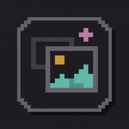

Asset PrompterYour agent writes the prompt. You make the picture.
A small local app between your coding agent and the generator you use by hand.


Asset PrompterA small local app between your coding agent and the generator you use by hand.